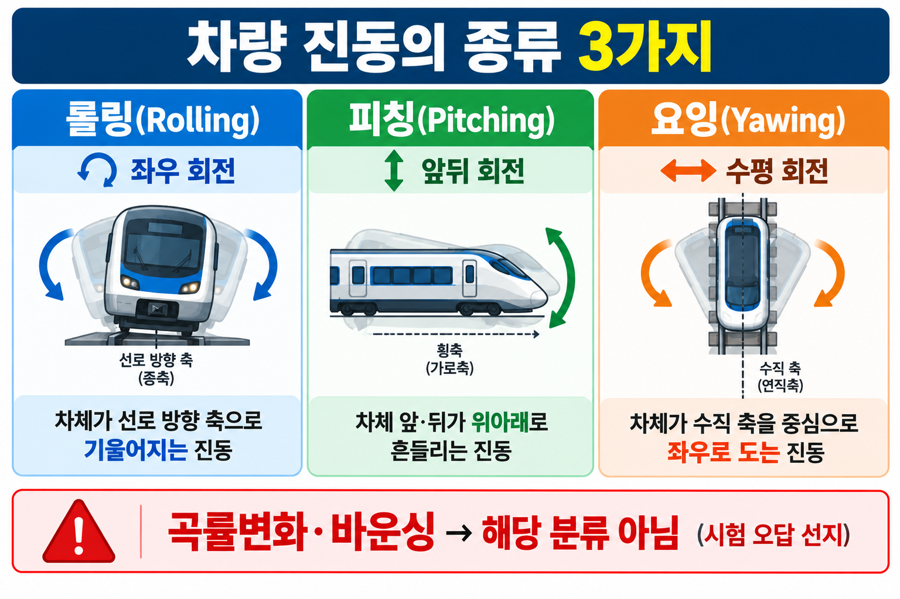

1. 진동·소음의 원인 및 저감 대책 (SOURCE 90)
SOURCE 90
진동·소음 원인 3가지
| # | 원인 | 설명 |
|---|
| ① | 차체 공진 | 차체 고유진동수와 외력 진동수가 일치할 때 발생 |
| ② | 궤도 불량 | 레일 이음매, 노면 불규칙 등 궤도 상태 불량 |
| ③ | 차륜 편마모 | 차륜이 균일하지 않게 마모되어 진동 유발 |
| # | 저감 대책 | 설명 |
|---|
| ① | 대차 현가장치 개선 | 스프링·댐퍼 성능 향상으로 진동 흡수력 증대 |
| ② | 차체 구조 보강 | 차체 강성 확보로 공진 억제 |
| ③ | 차륜 가공 정밀도 향상 | 차륜 균일 마모 유지로 편심 진동 방지 |
함정: "대차 상부 높이를 높인다" → 진동 저감 대책이 아니다. 오히려 무게중심이 높아져 안정성에 불리하다.
2. 차량 진동형태 3종 (SOURCE 93-B)
SOURCE 93-B
롤링·피칭·요잉
롤링 (Rolling)
차체 좌우 흔들림
X축(진행방향 축) 회전
→ 차체가 좌우로 기울어지는 진동
피칭 (Pitching)
차체 앞뒤 들썩임
Y축(좌우 방향 축) 회전
→ 차체 앞뒤가 번갈아 오르내리는 진동
요잉 (Yawing)
차체 수평면에서 좌우 비틀림
Z축(수직 방향 축) 회전
→ 차체가 수평면에서 좌우로 틀어지는 진동
| 진동형태 | 운동 방향 | 회전축 |
|---|
| 롤링 (Rolling) | 차체 좌우 흔들림 | X축 (진행 방향) |
| 피칭 (Pitching) | 차체 앞뒤 들썩임 | Y축 (좌우 방향) |
| 요잉 (Yawing) | 수평면 좌우 비틀림 | Z축 (수직 방향) |
주의: 사행동 관련 내용은 이 단원에서 다루지 않는다. 사행동은 13-03 단원 참조.
암기법: 롤(Roll)=구르다(좌우), 피치(Pitch)=던지다(앞뒤), 요(Yaw)=비틀다(수평회전)
시각 자료

VIS-081 | 차량진동 3종(롤링·피칭·요잉) 비교표
기출 문항
문항 1 / 3
철도차량의 진동 및 소음 원인에 해당하지 않는 것은?
① 절연이음매와 접착식 절연
② 차체 공진
③ 궤도 불량
④ 차륜 편마모
문항 2 / 3
철도차량의 진동 저감 대책으로 옳지 않은 것은?
① 대차 상부 높이를 높인다
② 대차 현가장치 개선
③ 차체 구조 보강
④ 차륜가공정밀도 향상
문항 3 / 3
차량진동 종류가 아닌 것은?
① 롤링
② 피칭
③ 요잉
④ 곡률변화
정답 및 해설
문항 1 / 3
정답 ① — 철도차량 주요 소음·진동 요인: 궤도 불량, 차륜 편마모, 차체 공진 등. 절연이음매는 전기 회로 구분용으로 소음·진동의 주요 원인이 아니다.
문항 2 / 3
정답 ① — 철도차량 진동 감소 대책: 현가장치 성능 개선, 차륜·차축 가공 정밀도 향상, 차체 강성 확보. 대차 상부 높이를 높이는 것은 진동 감소와 무관하며, 오히려 무게중심을 높여 안정성에 불리하다.
문항 3 / 3
정답 ④ — 대표적인 철도차량 진동 형태(SOURCE 93-B): 롤링(차체 좌우 흔들림), 피칭(차체 앞뒤 들썩임), 요잉(차체 수평면에서 좌우 비틀림). ①②③은 모두 실제 차량 진동 형태에 해당한다.